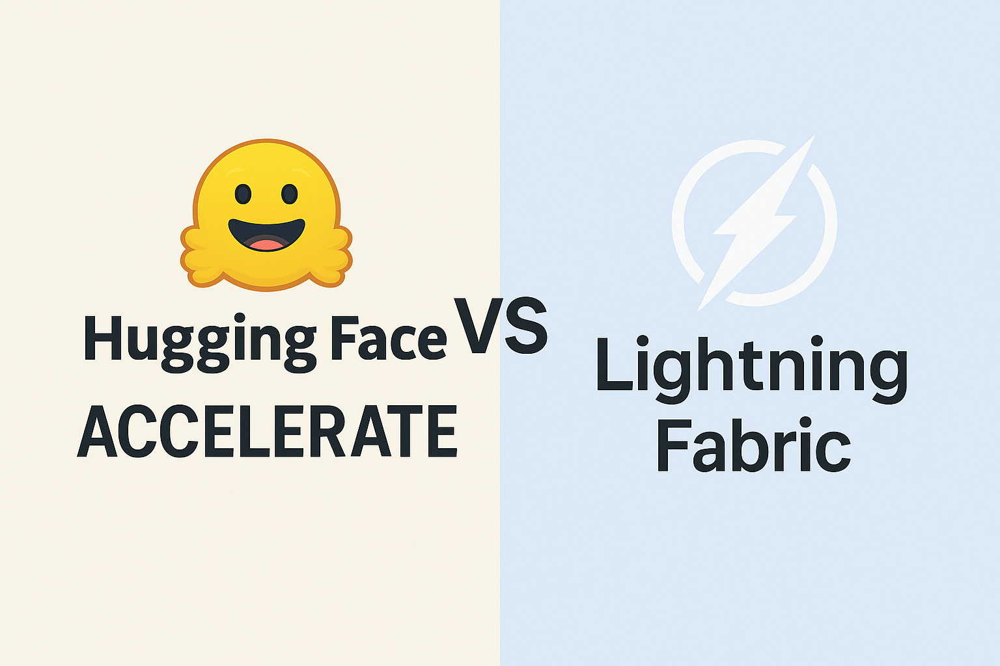

Introduction
When you’re working with deep learning models that need to scale across multiple GPUs or even multiple machines, you’ll quickly encounter the complexity of distributed training. Two libraries have emerged as popular solutions to simplify this challenge: Hugging Face Accelerate and PyTorch Lightning Fabric. While both aim to make distributed training more accessible, they take fundamentally different approaches to solving the problem.
Think of these libraries as two different philosophies for handling the complexity of scaling machine learning workloads. Accelerate acts like a careful translator, taking your existing PyTorch code and automatically adapting it for distributed environments with minimal changes. Lightning Fabric, on the other hand, functions more like a structured framework that provides you with powerful tools and patterns, but asks you to organize your code in specific ways to unlock its full potential.
Understanding the Core Philosophy
Hugging Face Accelerate: Minimal Disruption
Hugging Face Accelerate was born from a simple but powerful idea: most researchers and practitioners already have working PyTorch code, and they shouldn’t need to rewrite everything just to scale it up. The library’s design philosophy centers around minimal code changes. You can take a training loop that works on a single GPU and, with just a few additional lines, make it work across multiple GPUs, TPUs, or even different machines.
The beauty of Accelerate lies in its transparency. When you wrap your model, optimizer, and data loader with Accelerate’s prepare function, the library handles the complex orchestration of distributed training behind the scenes. Your core training logic remains largely unchanged, which means you can focus on your model architecture and training strategies rather than wrestling with distributed computing concepts.
Lightning Fabric: Structured Flexibility
Lightning Fabric approaches the problem from a different angle. Rather than trying to be invisible, Fabric provides you with a set of powerful abstractions and tools that make distributed training not just possible, but elegant. It’s part of the broader PyTorch Lightning ecosystem, which has always emphasized best practices and reproducible research. Fabric gives you fine-grained control over the training process while still handling the low-level distributed computing details.
Code Integration and Learning Curve
When you’re starting with Accelerate, the learning curve feels remarkably gentle. To make standard PyTorch code work with Accelerate, you typically need to make just a few key changes:
- Initialize an
Acceleratorobject - Wrap your model and optimizer with the
preparemethod - Replace your
loss.backward()call withaccelerator.backward(loss) - The rest of your code can remain exactly as it was
This approach has profound implications for how teams adopt distributed training. Junior developers can start using distributed training without needing to understand concepts like gradient synchronization, device placement, or communication backends.
Lightning Fabric requires a bit more upfront learning, but this investment pays dividends in terms of flexibility and control. Fabric encourages you to structure your code using its abstractions, which might feel unfamiliar at first but lead to more maintainable and scalable codebases. You’ll work with:
- Fabric’s strategy system for distributed training
- Device management for handling different hardware
- Logging integrations for experiment tracking
The key insight is that Fabric’s slightly steeper learning curve comes with corresponding benefits. Once you understand Fabric’s patterns, you’ll find it easier to implement complex training scenarios, debug distributed issues, and maintain consistency across different experiments.
Performance and Optimization Capabilities
Both libraries are built on top of PyTorch’s native distributed training capabilities, so their fundamental performance characteristics are quite similar. However, they differ in how they expose optimization opportunities to you as a developer.
Accelerate’s Automatic Optimizations
Accelerate shines in its simplicity for standard use cases. The library automatically handles many optimization decisions for you, such as:
- Choosing appropriate communication backends
- Managing memory efficiently across devices
- Implementing gradient accumulation strategies
For many common scenarios, particularly when training transformer models, Accelerate’s automatic optimizations work excellently out of the box.
This automation can sometimes work against you when you need fine-grained control. If you’re implementing custom gradient accumulation strategies, working with unusual model architectures, or need to optimize communication patterns for your specific hardware setup, Accelerate’s abstractions might feel limiting.
Fabric’s Explicit Control
Lightning Fabric provides more explicit control over optimization decisions. You can:
- Choose specific distributed strategies
- Customize how gradients are synchronized
- Implement sophisticated mixed-precision training schemes
This control comes at the cost of needing to understand what these choices mean, but it enables you to squeeze every bit of performance out of your hardware.
Code Examples and Practical Implementation
Hugging Face Accelerate Example
from accelerate import Accelerator
import torch
from torch.utils.data import DataLoader
# Initialize accelerator - handles device placement and distributed setup
accelerator = Accelerator()
# Your existing model, optimizer, and data loader
model = YourModel()
optimizer = torch.optim.AdamW(model.parameters())
train_dataloader = DataLoader(dataset, batch_size=32)
# Prepare everything for distributed training - this is the key step
model, optimizer, train_dataloader = accelerator.prepare(
model, optimizer, train_dataloader
)
# Your training loop stays almost identical
for batch in train_dataloader:
optimizer.zero_grad()
# Forward pass works exactly as before
outputs = model(**batch)
loss = outputs.loss
# Use accelerator.backward instead of loss.backward()
accelerator.backward(loss)
optimizer.step()
# Logging works seamlessly across all processes
accelerator.log({"loss": loss.item()})Lightning Fabric Example
from lightning.fabric import Fabric
import torch
from torch.utils.data import DataLoader
# Initialize Fabric with explicit strategy choices
fabric = Fabric(accelerator="gpu", devices=4, strategy="ddp")
fabric.launch()
# Setup model and optimizer
model = YourModel()
optimizer = torch.optim.AdamW(model.parameters())
# Setup for distributed training - more explicit control
model, optimizer = fabric.setup(model, optimizer)
train_dataloader = fabric.setup_dataloaders(DataLoader(dataset, batch_size=32))
# Training loop with explicit fabric calls
for batch in train_dataloader:
optimizer.zero_grad()
# Forward pass
outputs = model(**batch)
loss = outputs.loss
# Backward pass with fabric
fabric.backward(loss)
optimizer.step()
# Explicit logging with fabric
fabric.log("loss", loss.item())The code examples illustrate a fundamental distinction: Accelerate aims to make your existing code work with minimal changes, while Fabric provides more explicit control over the distributed training process.
Ecosystem Integration and Tooling
Hugging Face Accelerate Ecosystem
The ecosystem story reveals another important distinction between these libraries. Hugging Face Accelerate benefits from its tight integration with the broader Hugging Face ecosystem. Benefits include:
- Seamless interoperability with transformers and datasets libraries
- Integration with popular experiment tracking tools
- Support for various hardware configurations out of the box
Lightning Fabric Ecosystem
Lightning Fabric is part of the comprehensive PyTorch Lightning ecosystem, which includes:
- Distributed training tools
- Experiment management systems
- Hyperparameter optimization utilities
- Deployment tools
This ecosystem approach means that once you invest in learning Fabric, you gain access to a complete toolkit for machine learning research and production.
Advanced Features and Customization
Memory Management and Optimization
Accelerate provides automatic memory management features that work well for most use cases:
- Automatic gradient accumulation
- Mixed precision training
- Advanced techniques like gradient checkpointing
These features work transparently, requiring minimal configuration from the user.
Lightning Fabric offers more granular control over memory management:
- Custom gradient accumulation strategies
- Fine-tuned mixed precision settings
- Advanced memory optimization techniques
- Precise control over activation checkpointing
Hardware Support and Scalability
Both libraries support a wide range of hardware configurations, from single GPUs to multi-node clusters:
- Accelerate: Automatically detects hardware setup and configures itself accordingly
- Fabric: Provides explicit configuration options for different hardware setups
Debugging and Development Experience
| Aspect | Accelerate | Fabric |
|---|---|---|
| Debugging Feel | Similar to single-GPU debugging | More explicit debugging tools |
| Error Messages | Standard PyTorch errors | Enhanced distributed training errors |
| Problem Isolation | Transparent issues | Structured error handling |
| Learning Curve | Gentle, gradual | Steeper but more comprehensive |
Performance Benchmarks and Real-World Usage
In practice, both libraries perform similarly for most common use cases, since they’re both built on PyTorch’s native distributed training capabilities. The performance differences typically come from how well each library’s abstractions match your specific use case.
- Accelerate: Excels for transformer models and common architectures
- Fabric: Better performance for custom architectures with targeted optimizations
Migration and Adoption Strategies
Choosing Accelerate When:
- You need to scale existing code quickly
- Your team is new to distributed training
- You’re working primarily with transformer models
- You need rapid prototyping and iteration
Choosing Fabric When:
- You need fine-grained control over training procedures
- You’re implementing custom training algorithms
- You want a comprehensive framework for multiple projects
- You’re building production ML systems
Future Considerations
Both libraries continue to evolve rapidly:
- Accelerate: Development tied to Hugging Face ecosystem advances
- Fabric: Focuses on cutting-edge distributed training capabilities
Conclusion
Hugging Face Accelerate and PyTorch Lightning Fabric represent two excellent but philosophically different approaches to distributed training:
- Accelerate: Prioritizes simplicity and ease of adoption
- Fabric: Emphasizes flexibility and control
Neither choice is inherently better than the other. The right choice depends on your specific needs, team expertise, and project requirements. Both libraries will successfully help you move beyond single-GPU limitations and unlock the full potential of distributed computing for machine learning.
The most important step is to start experimenting with distributed training, regardless of which library you choose. Both Accelerate and Fabric provide excellent foundations for learning distributed training concepts and scaling your machine learning workloads effectively.